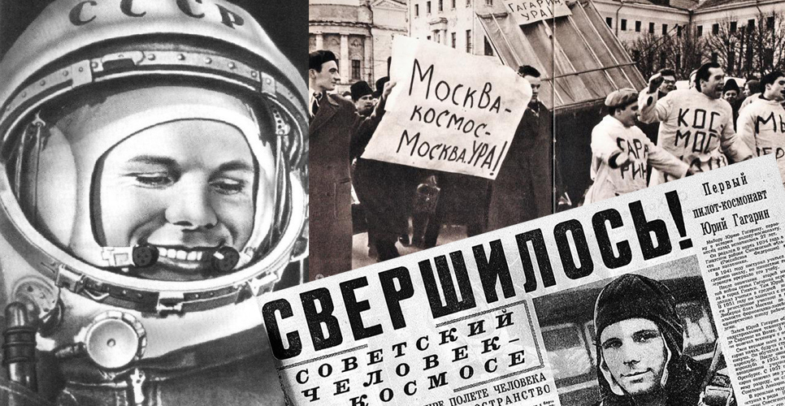

12 апреля 1961 года состоялся первый полёт человека в космос
12 апреля 1961 года – дата в истории, о которой не надо напоминать: все знают, что именно в этот день состоялся первый в мире полёт человека в космос. 12 апреля 1961 года в 9 час. 07 мин. по московскому времени в нескольких десятках километров севернее посёлка Тюратам в Казахстане с космодрома Байконур состоялся запуск ракеты-носителя «Восток». Она вывела на околоземную орбиту советский космический корабль «Восток» с человеком на борту. Это был Юрий Алексеевич Гагарин. Продолжительность полёта составила 1 час 48 мин. Во время нахождения на орбите Гагарин поддерживал радиосвязь с Землей, вёл наблюдения в иллюминаторы, контролировал работу систем корабля.
После совершения одного оборота вокруг Земли спускаемый аппарат корабля совершил посадку на территории СССР, в Саратовской области. Как и планировалось, на высоте нескольких километров от поверхности Земли космонавт катапультировался и совершил посадку на парашюте вблизи спускаемого аппарата. Приземлился Юрий Гагарин в 10 час. 55 мин. по московскому времени.
Приказом Министра обороны СССР за успешное выполнение правительственного задания первому космонавту Земли старшему лейтенанту Гагарину было присвоено внеочередное воинское звание «майор».
14 апреля 1961 года указом Президиума Верховного Совета СССР Юрию Алексеевичу Гагарину было присвоено звание Героя Советского Союза.
Первый полёт человека в космос имел важнейшее значение для дальнейшего развития космонавтики и всего человечества.
Следом за Гагариным, 6–7 августа 1961 года, первый суточный космический полёт на космическом корабле «Восток-2» совершил космонавт Герман Степанович Титов, а 11–15 августа того же года состоялся первый групповой полёт двух кораблей – «Восток-3» (космонавт Андриян Николаевич Николаев) и «Восток-4» (космонавт Павел Романович Попович).
Праздник «День космонавтики» был установлен указом Президиума Верховного Совета СССР от 9 апреля 1962 года в честь совершённого 12 апреля 1961 года полёта Юрия Гагарина. В ноябре 1968 года на конгрессе Международной федерации авиационного спорта было принято решение отмечать 12 апреля как Всемирный день авиации и космонавтики, а 8 апреля 2011 года на заседании Генеральной ассамблеи ООН была принята предложенная Россией резолюция, согласно которой 12 апреля объявлено Международным днём полёта человека в космос.
Одним из первых, кто выдвинул идею об использовании ракет для космических полётов, был российский учёный Константин Эдуардович Циолковский. Ракету для межпланетных сообщений он спроектировал ещё в 1903 году. Через полвека, 4 октября 1957 года, с помощью первой в мире межконтинентальной баллистической ракеты Р-7, спроектированной советским учёным Сергеем Павловичем Королёвым, в СССР был произведён запуск первого в мире искусственного спутника Земли, что позволило впервые измерить плотность верхней атмосферы, получить данные о распространении радиосигналов в ионосфере, отработать вопросы выведения на орбиту, тепловой режим и др.
В начале 1960 года был создан Центр подготовки космонавтов и набран первый отряд космонавтов.
Первый в мире полёт в космос женщины осуществила Валентина Владимировна Терешкова с 16 по 19 июня 1963 года на космическом корабле «Восток-6».
12 октября 1964 года стартовал первый многоместный космический корабль «Восход». В экипаж корабля вошли космонавты Владимир Михайлович Комаров, Константин Петрович Феоктистов, Борис Борисович Егоров.